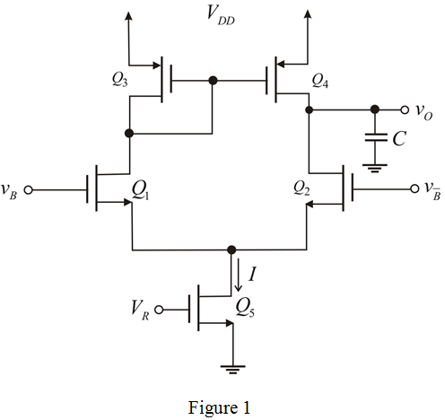

Calculate the value of current,  .
.
Substitute for  ,
,  for
for  and for
and for  .
.
Thus, the value of required current, 
Refer to Figure 15.24 in the textbook.
Draw the circuit diagram for sense amplifier.

Calculate the value of current, .
Substitute for , for and for .
Thus, the value of required current,
Calculate the value of power dissipation, .
Substitute  for and
for and  for .
for .
Thus, the value of power dissipation,  is .
is .